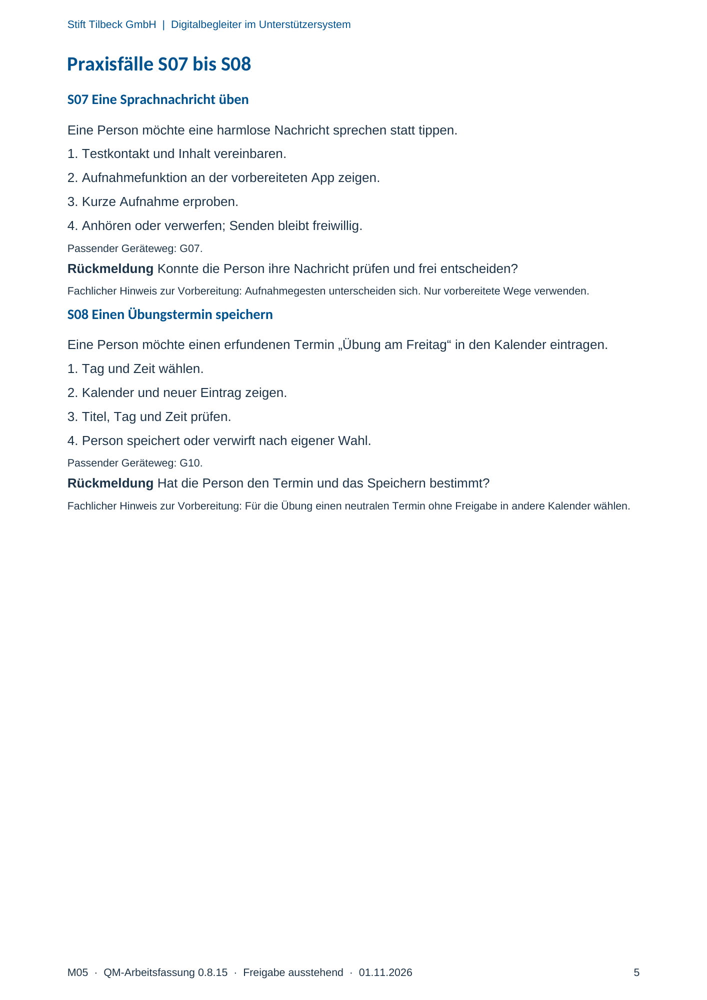

M05 · Originalseite 5
Eine Sprachnachricht üben
Original-Druckseite mit S07. Auf derselben Seite stehen außerdem S08. Diese sind dadurch keine zusätzliche Aufgabe.
Fragen und Ankreuzfelder werden auf dem Ausdruck bearbeitet. Die Lesefassung speichert keine Antworten.
Lesefassung · Seite 5
Stift Tilbeck GmbH | Digitalbegleiter im Unterstützersystem
M05 · QM-Arbeitsfassung 0.8.15 · Freigabe ausstehend · 01.11.2026 5
Praxisfälle S07 bis S08
S07 Eine Sprachnachricht üben
Eine Person möchte eine harmlose Nachricht sprechen statt tippen.
1. Testkontakt und Inhalt vereinbaren.
2. Aufnahmefunktion an der vorbereiteten App zeigen.
3. Kurze Aufnahme erproben.
4. Anhören oder verwerfen; Senden bleibt freiwillig.
Passender Geräteweg: G07.
Rückmeldung Konnte die Person ihre Nachricht prüfen und frei entscheiden?
Fachlicher Hinweis zur Vorbereitung: Aufnahmegesten unterscheiden sich. Nur vorbereitete Wege verwenden.
S08 Einen Übungstermin speichern
Eine Person möchte einen erfundenen Termin „Übung am Freitag“ in den Kalender eintragen.
1. Tag und Zeit wählen.
2. Kalender und neuer Eintrag zeigen.
3. Titel, Tag und Zeit prüfen.
4. Person speichert oder verwirft nach eigener Wahl.
Passender Geräteweg: G10.
Rückmeldung Hat die Person den Termin und das Speichern bestimmt?
Fachlicher Hinweis zur Vorbereitung: Für die Übung einen neutralen Termin ohne Freigabe in andere Kalender wählen.
Originalseite ansehen
